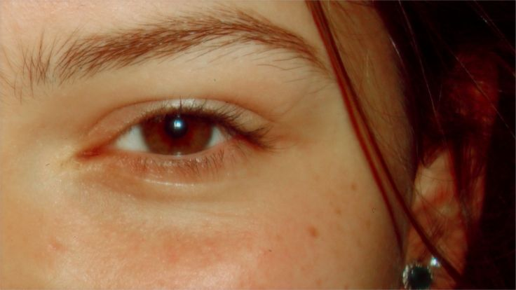
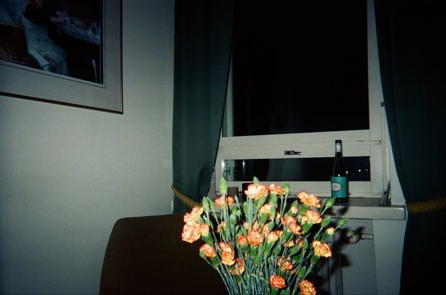

'Cybershots' foram as camêras digitais produzidas pela empresa Sony que foram fabricadas de 96 até cerca de 2008.
É interessante pensar que, com a volta da estética dos anos 2000, muitos
começaram a optar por tirar suas fotos com o mesmo efeito da época. Uma das ferramentas muito requisitada para isso, além de filtros na foto, são as camêras digitais,
que mesmo não sendo mais produzidas, tem cada vez mais procura.
Com isso, seguem fotos tiradas em Cybershots (camêras digitais no geral), que atendem o conceito muito aclamado nas redes sociais

